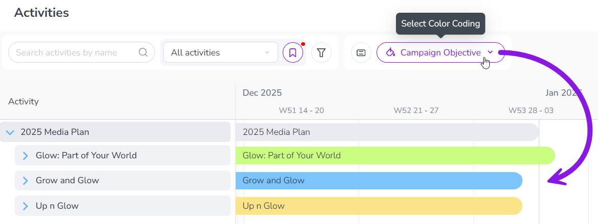

Color-code Timeline activity bars
In the Timeline display mode, marketing activities are represented by horizontal bars. To make it easier to identify activities at a glance, you can use the  Select Color-Coding menu in the toolbar to color-code the activity bars based on:
Select Color-Coding menu in the toolbar to color-code the activity bars based on:
Activity Type Group: Color-codes the bars according to the group that the activity's activity type belongs to.
Activity Type: Color-codes the bars according to the activity's specific activity type.
Attribute: Color-codes the bars according to which list option of a selected single-select (Drop-Down List) attribute is set on each activity.
Color-code activities by type
The Activity Type Group and Activity Type options are always available in the  Select Color-Coding menu.
Select Color-Coding menu.
Use these options to visually distinguish activities by their activity types:
Color-coding by activity type group is useful for broadly telling different kinds of activities apart, and this method is always applied to the Timeline by default.
Use color-coding by activity type for more granularity, for example to assess at a glance if you have the right mix of tactics in a campaign.
Color-code activity bars by activity type or type group
In the
 Activities section, select the Timeline display mode.
Activities section, select the Timeline display mode.In the table controls, click
 Select Color-Coding. The Color by menu panel opens.
Select Color-Coding. The Color by menu panel opens.Use the Color by menu to select how you want to color-code the activity bars:
- Activity Type Group
Each activity bar in the Timeline is displayed in a preset color based on the activity type group that its activity type belongs to.
Your Uptempo administrator selects the colors that represent each activity type group. If no color has been set for an activity type group, its activities are displayed in the system default color (purple).
This is the default selection.
- Activity Type
Each activity bar in the Timeline is displayed in a preset color based on the activity type it belongs to
Your Uptempo administrator selects the colors that represent each activity type. If no color has been set for an activity type, its activities are displayed in the activity type group's color (if set) instead.
The activity bars in the Timeline change color based on their activity type or type group, and the color assigned to each type or type group:

Color-code activities by attribute
When an attribute has been set up for color-coding, the attribute is shown as an option in the  Select Color-Coding menu, under the section Attributes:
Select Color-Coding menu, under the section Attributes:

After you select an attribute from the  Select Color-Coding menu, each activity bar is displayed in a preset color based on the attribute option set on that activity.
Select Color-Coding menu, each activity bar is displayed in a preset color based on the attribute option set on that activity.
- Example
In this example, the Campaign Objective attribute has color-coding enabled, with the following colors assigned to each attribute value:
Sales Enablement: Green
Reputation: Blue
Demand Creation: Yellow
After you select the attribute Campaign Objective in the
Select Color-Coding menu, the activity bars for activities with this attribute are displayed in the specified colors according to the attribute value that's assigned to them:The activity bar for the activity Glow: Part of Your World is displayed in green, because its Campaign Objective attribute is set to Sales Enablement.
The activity bar for the activity Grow and Glow is displayed in blue, because its Campaign Objective attribute is set to Reputation.
The activity bar for the activity Up n Glow is displayed in yellow, because its Campaign Objective attribute is set to Demand Creation.
The activity bar for the parent activity 2025 Media Plan is displayed in grey, because it either does not have the Campaign Objective attribute, or does not have a value for that attribute.

{kind=link}
Color-code activity bars by attribute value
In the
Activities section, select the Timeline display mode.In the table controls, click
Select Color-Coding. The Color by menu panel opens.Use the Color by menu to select the attribute you want to use to color-code the activity bars:
The activity bars in the Timeline change color based on the attribute option set on them for the selected attribute:

To remove the attribute-based color-coding again, select the Default color option from the Color by menu.